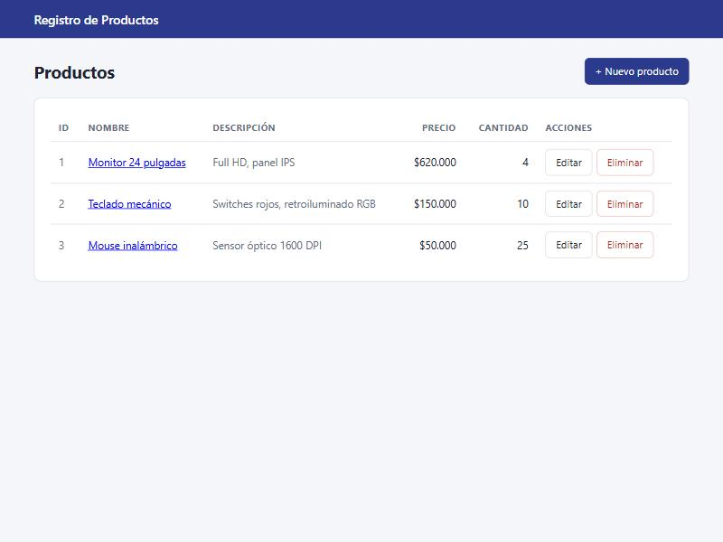
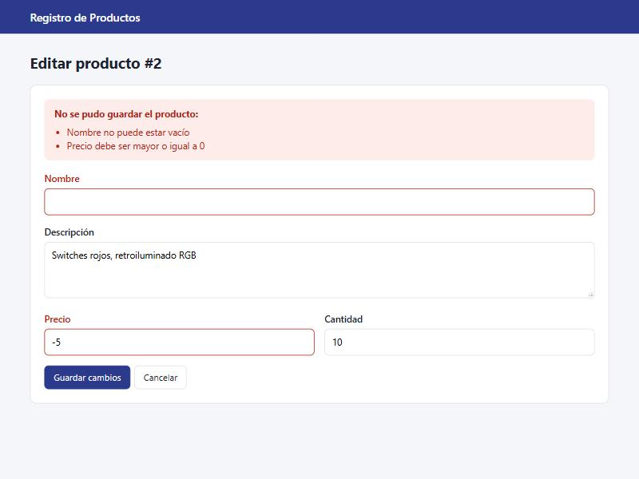

| Asignatura | Aplicaciones y servicios web (580202009) |
| Estudiante | Luis Miguel Cardona |
| Programa | Tecnología en Desarrollo de Software |
| Docente | Jonathan Sánchez Giraldo |
| Repositorio | https://github.com/luisito1520/crud-productos-rails |
| Fecha | 15 de noviembre de 2026 |
Medellín, 2026
Este trabajo desarrolla una aplicación web que implementa las operaciones CRUD (Crear, Leer, Actualizar y Eliminar) sobre un registro de productos. Ofrece dos formas de uso sobre la misma lógica: páginas HTML (vistas) para usarla desde el navegador y una API REST que responde en JSON. Se eligió Ruby como lenguaje y Ruby on Rails 8 como framework porque permite construir servicios web con poca configuración, trae integrado un sistema de pruebas (Minitest) y sigue el patrón Modelo–Vista–Controlador (MVC). Como almacenamiento se usa un archivo JSON, una de las opciones permitidas por la guía.
Herramientas utilizadas: Ruby 3.3, Rails 8.1, Bundler, Minitest, SimpleCov, Git y SonarQube.
El proyecto se generó sin base de datos (ActiveRecord desactivado), ya que la persistencia se hace en un archivo:
gem install rails rails new crud_productos --minimal --skip-active-record cd crud_productos bundle install
Estructura de archivos relevante:
crud_productos/ ├── app/ │ ├── services/product_repository.rb # ARCHIVO PRINCIPAL: lógica del CRUD │ ├── models/product.rb # Modelo Producto + validaciones │ ├── controllers/ │ │ ├── products_controller.rb # Páginas HTML │ │ └── api/products_controller.rb # API REST JSON │ ├── views/products/ # Vistas: index, show, new, edit, _form │ └── views/layouts/application.html.erb # Plantilla general y estilos ├── config/routes.rb # Rutas /products y /api/products ├── config/locales/es.yml # Mensajes en español ├── storage/products.json # Datos (se crea automáticamente) ├── test/ │ ├── services/product_repository_test.rb # ARCHIVO DE PRUEBAS unitarias │ ├── controllers/products_controller_test.rb │ └── controllers/api/products_controller_test.rb ├── sonar-project.properties # Configuración de SonarQube └── README.md
Se aplicó el patrón MVC: el modelo define qué es un producto válido, el repositorio contiene las operaciones CRUD y el acceso al archivo, los controladores reciben las peticiones y las vistas muestran el resultado. Los dos controladores (HTML y API) llaman al mismo repositorio, así la lógica no se repite y se puede probar sin levantar el servidor.
El producto tiene los campos exigidos por la guía. Se usa ActiveModel para
tipar los atributos y validarlos:
| Campo | Tipo | Regla |
|---|---|---|
| id | entero | Único, lo asigna el sistema (autoincremental, no se reutiliza) |
| nombre | texto | Obligatorio, máx. 100 caracteres |
| descripcion | texto | Opcional, máx. 500 caracteres |
| precio | decimal | Obligatorio, ≥ 0 |
| cantidad | entero | Obligatorio, entero ≥ 0 |
class Product
include ActiveModel::Model
include ActiveModel::Attributes
attribute :id, :integer
attribute :nombre, :string
attribute :descripcion, :string
attribute :precio, :decimal
attribute :cantidad, :integer
validates :nombre, presence: true, length: { maximum: 100 }
validates :precio, presence: true, numericality: { greater_than_or_equal_to: 0 }
validates :cantidad, presence: true,
numericality: { only_integer: true, greater_than_or_equal_to: 0 }
end
Los datos se guardan en storage/products.json con un contador
next_id que garantiza ids únicos:
{
"next_id": 3,
"products": [
{ "id": 1, "nombre": "Teclado", "descripcion": "Mecánico", "precio": 150000.0, "cantidad": 10 },
{ "id": 2, "nombre": "Mouse", "descripcion": "Inalámbrico", "precio": 50000.0, "cantidad": 20 }
]
}
| Operación | Método | Comportamiento | Error |
|---|---|---|---|
| Crear | create(attrs) | Valida, asigna id y guarda | InvalidProduct |
| Leer todos | all | Devuelve la lista | – |
| Leer uno | find(id) | Busca por id | NotFound |
| Actualizar | update(id, attrs) | Cambia solo los campos enviados y valida | NotFound, InvalidProduct |
| Eliminar | delete(id) | Quita el producto del archivo | NotFound |
def create(attrs)
product = Product.new(permitted(attrs))
raise InvalidProduct, product.errors unless product.valid?
write do |data|
product.id = data["next_id"]
data["next_id"] += 1
data["products"] << product.to_h
end
product
end
def update(id, attrs)
product = nil
write do |data|
index = data["products"].index { |p| p["id"] == id.to_i }
raise NotFound, id unless index
product = Product.new(data["products"][index].merge(permitted(attrs)))
raise InvalidProduct, product.errors unless product.valid?
data["products"][index] = product.to_h
end
product
end
El método write lee el archivo, aplica el cambio y lo guarda dentro de un
Mutex, para que dos peticiones simultáneas no se sobrescriban. Si ocurre un error
(por ejemplo, el producto no existe), el archivo no se modifica.
Las vistas se hicieron con plantillas ERB de Rails. El formulario es un parcial
(_form.html.erb) que se reutiliza para crear y para editar. Eliminar pide
confirmación antes de borrar.
| Ruta | Vista | Operación |
|---|---|---|
| / o /products | index: tabla con todos los productos y botones Editar / Eliminar | Leer |
| /products/new | new: formulario vacío | Crear |
| /products/:id | show: detalle de un producto | Leer |
| /products/:id/edit | edit: formulario con los datos actuales | Actualizar |
Cuando los datos no son válidos, el formulario se vuelve a mostrar con los errores en
español y los campos marcados en rojo (Rails traduce los mensajes con
config/locales/es.yml). Si se intenta ver, editar o eliminar un producto que no
existe, se regresa al listado con un mensaje de error.
Figura 1. Listado de productos.

Figura 2. Formulario de edición con errores de validación.

Las mismas operaciones también están disponibles como API, bajo el prefijo /api:
| Método | Ruta | Acción | Respuesta exitosa | Respuesta de error |
|---|---|---|---|---|
| GET | /api/products | Listar | 200 | – |
| GET | /api/products/:id | Ver uno | 200 | 404 |
| POST | /api/products | Crear | 201 | 422 |
| PATCH | /api/products/:id | Actualizar | 200 | 404 / 422 |
| DELETE | /api/products/:id | Eliminar | 204 | 404 |
Ejemplo de uso:
curl -X POST http://localhost:3000/api/products -H "Content-Type: application/json" \
-d '{"product":{"nombre":"Teclado","descripcion":"Mecánico","precio":150000,"cantidad":10}}'
→ 201 Created
{"id":1,"nombre":"Teclado","descripcion":"Mecánico","precio":150000.0,"cantidad":10}
curl http://localhost:3000/api/products/99
→ 404 Not Found
{"error":"No existe un producto con id 99"}
Se usó Minitest, el framework de pruebas incluido en Rails. Hay tres archivos: uno prueba directamente la lógica del CRUD (pruebas unitarias), otro prueba las páginas HTML y otro los endpoints de la API. Cada operación tiene al menos un caso exitoso y uno de error. Las pruebas usan un archivo JSON temporal para no afectar los datos reales.
| Operación | Caso exitoso | Caso de error |
|---|---|---|
| Crear | Guarda el producto y asigna ids 1, 2… | Falta nombre/precio; precio o cantidad negativos |
| Leer | Encuentra por id; lista vacía al inicio | Buscar id inexistente (999) |
| Actualizar | Cambia solo precio y cantidad | Id inexistente; nombre vacío (no modifica el dato) |
| Eliminar | Borra el producto; ids no se reutilizan | Eliminar id inexistente |
test "actualizar: falla si el producto no existe" do
assert_raises(ProductRepository::NotFound) { @repo.update(999, nombre: "X") }
end
test "eliminar: falla si el producto no existe" do
assert_raises(ProductRepository::NotFound) { @repo.delete(999) }
end
Resultado de la ejecución con bin/rails test:
Running: ................................... Coverage report generated for Minitest to coverage/index.html JSON Coverage report generated for Minitest to coverage/coverage.json Line coverage: 141 / 141 (100.00%) 35 runs, 95 assertions, 0 failures, 0 errors, 0 skips
Ejemplo de prueba de una vista (crear con datos inválidos):
test "crear con datos inválidos muestra los errores en español" do
post products_url, params: { product: { nombre: "", precio: "-5", cantidad: "1" } }
assert_response :unprocessable_content
assert_select ".errors li", /Nombre no puede estar vacío/
end
SonarQube es una plataforma de inspección continua que analiza el código fuente para
detectar bugs, vulnerabilidades, code smells, duplicación y mide la cobertura de pruebas.
Se configuró el archivo sonar-project.properties:
sonar.projectKey=crud-productos-rails sonar.projectName=CRUD Productos (Ruby on Rails) sonar.sources=app,config,lib sonar.tests=test sonar.ruby.coverage.reportPaths=coverage/coverage.json sonar.coverage.exclusions=config/**
Pasos realizados:
bin\windows-x86-64\StartSonar.bat.http://localhost:9000 (usuario admin), cambiar la
contraseña inicial y generar un Global Analysis Token.bin/rails test, que genera el reporte de cobertura
coverage/coverage.json con el formateador JSON de SimpleCov (el formato
que lee el analizador de Ruby de SonarQube).sonar-scanner -Dsonar.host.url=http://localhost:9000 desde la
carpeta del proyecto, con el token en la variable de entorno SONAR_TOKEN.Los archivos de config/ se excluyen solo del cálculo de cobertura porque son
configuración de Rails y no lógica de la aplicación (SimpleCov tampoco los mide); se siguen
analizando en busca de bugs y code smells.
Resultados obtenidos:
| Métrica | Resultado |
|---|---|
| Quality Gate | Passed |
| Bugs (Reliability) | 0 – calificación A |
| Vulnerabilidades (Security) | 0 – calificación A |
| Security hotspots | 0 |
| Code smells (Maintainability) | 0 – calificación A (deuda técnica: 0 min) |
| Cobertura de pruebas | 100,0 % |
| Duplicación | 0,0 % |
| Líneas de código analizadas | 471 |
Durante el análisis se corrigió un problema: en el primer intento SonarQube no podía leer
la cobertura porque SimpleCov la guardaba en el formato .resultset.json. Se
configuró el formateador JSON de SimpleCov y SonarQube pasó a leer la cobertura correctamente.
El código se versionó con Git y se publicó en GitHub. El archivo .gitignore
excluye la llave config/master.key, los datos locales, los logs y el reporte de
cobertura.
git init git add . git commit -m "CRUD de productos con Rails, pruebas y configuración de SonarQube" git branch -M main git remote add origin https://github.com/luisito1520/crud-productos-rails.git git push -u origin main
Luego se compartió el repositorio con el docente desde Settings → Collaborators → Add people.
Enlace del repositorio: https://github.com/luisito1520/crud-productos-rails
resources, controladores, plantillas ERB y respuestas JSON).Rails Core Team. (2025). Ruby on Rails Guides: Getting Started with Rails. https://guides.rubyonrails.org/getting_started.html
Rails Core Team. (2025). Using Rails for API-only Applications. https://guides.rubyonrails.org/api_app.html
Rails Core Team. (2025). Testing Rails Applications. https://guides.rubyonrails.org/testing.html
Rails Core Team. (2025). Layouts and Rendering in Rails. https://guides.rubyonrails.org/layouts_and_rendering.html
Rails Core Team. (2025). Action View Form Helpers. https://guides.rubyonrails.org/form_helpers.html
Rails Core Team. (2025). Rails Internationalization (I18n) API. https://guides.rubyonrails.org/i18n.html
Rails Core Team. (2025). Active Model Basics. https://guides.rubyonrails.org/active_model_basics.html
Ruby Community. (2025). Documentación de Ruby. https://www.ruby-lang.org/es/documentation/
Seattle.rb. (2025). Minitest. https://github.com/minitest/minitest
SimpleCov contributors. (2025). SimpleCov: Code coverage for Ruby. https://github.com/simplecov-ruby/simplecov
SonarSource. (2025). SonarQube Documentation: Ruby test coverage. https://docs.sonarsource.com/sonarqube-server/
GitHub. (2025). GitHub Docs: Inviting collaborators to a personal repository. https://docs.github.com/
Fielding, R. T. (2000). Architectural Styles and the Design of Network-based Software Architectures (Tesis doctoral). University of California, Irvine.